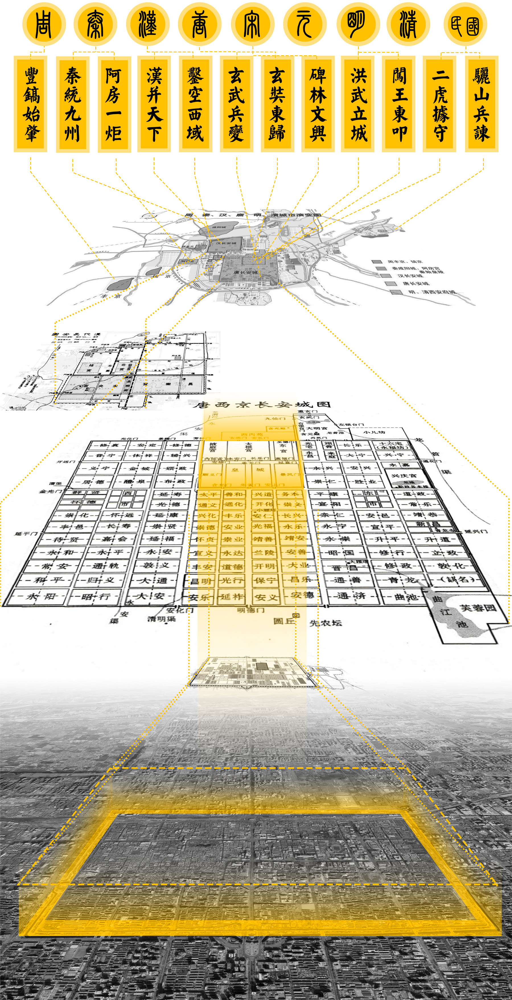
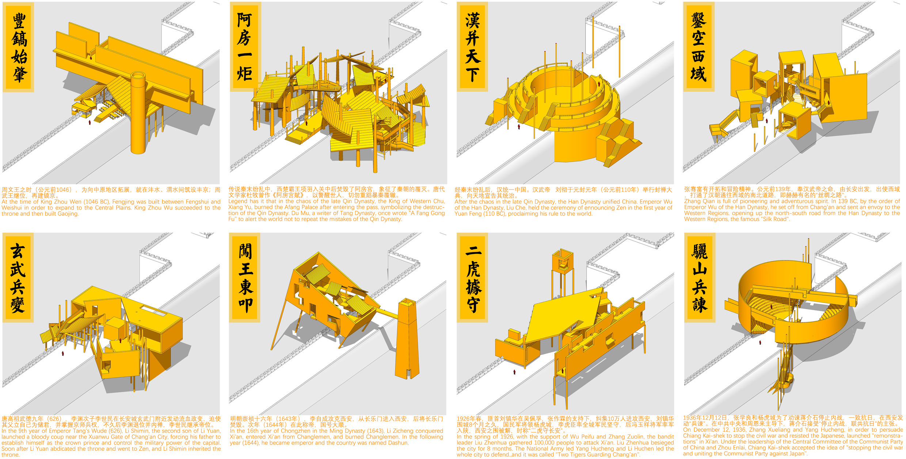
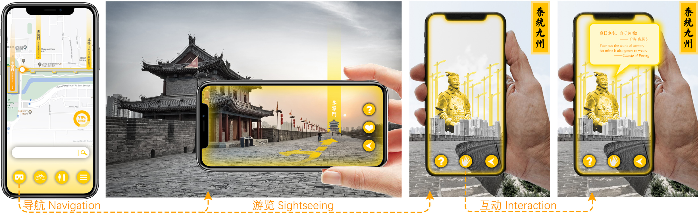
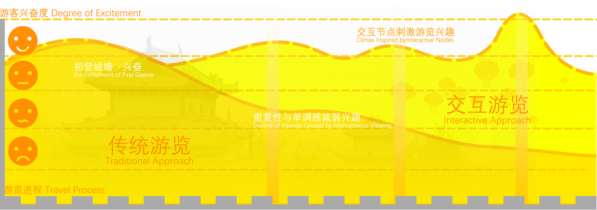
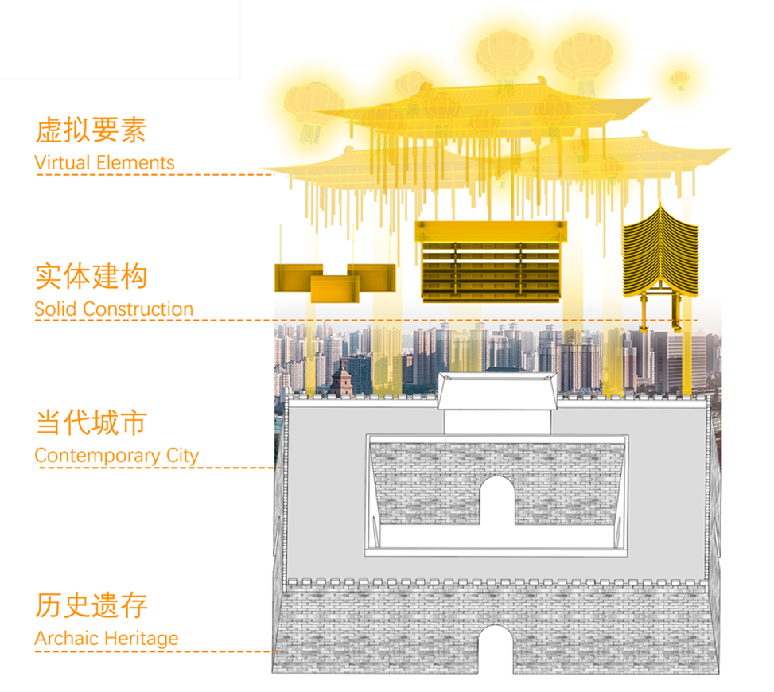

City Memory of Xi'an
MR Experience Design
The project is located on the ring line of the Ming City Wall in Xi’an. To address common issues in traditional historical heritage tourist areas—such as weak spatial identity, limited cultural appeal, and monotonous tour experiences—we designed a series of architectural and interaction strategies. The design uses historical events in Xi’an as anchor points, building a platform for presenting historical scenes through architectural translation and symbolism, while introducing Mixed Reality (MR) to calibrate historical sites and present related virtual materials, achieving mutual witnessing and interpretation between physical relics and virtual media.
Context
Based on document sorting and field investigations, we mapped historical events to the geographic context around the city wall. These events were then translated architecturally to form characteristic nodes along the tour route.
* This part of the 3D modeling work was mainly completed by teammate Shen Shuozhi.


Interaction Architecture
We established a hierarchical relationship between historical relics, the contemporary city, and virtual elements, building a holistic interactive framework for the project to optimize the tourist journey.

Function Planning
Initially centered on mobile devices, we designed the core functions including AR navigation, tour assistance, and interactive historical elements.


Prospectives
We envision larger-scale data presentation and richer information interaction, activating every corner inside and outside the ancient city.

Demo
Awards
This work is a winning project of the UIA-HYP CUP 2020 International Student Competition in Architectural Design.
For the original showcase content, see: City Memory of Xi'an on Webflow.